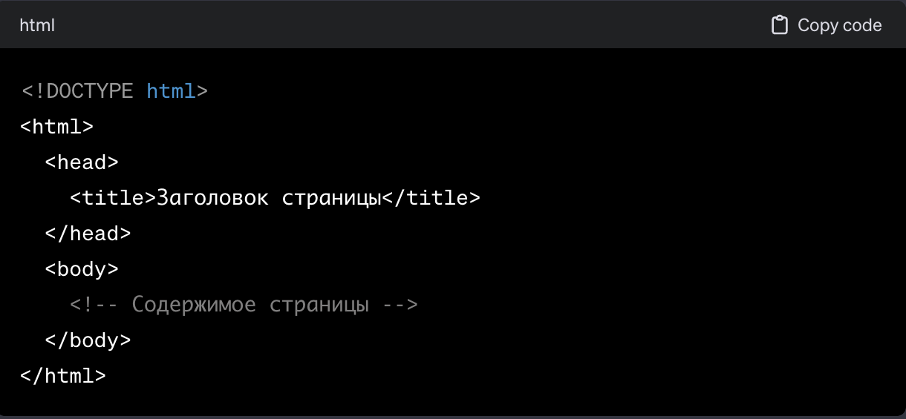
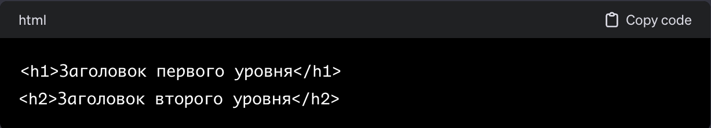
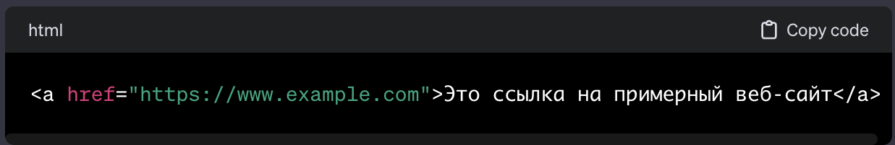
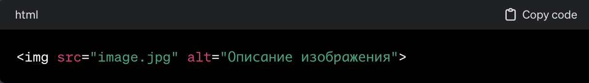
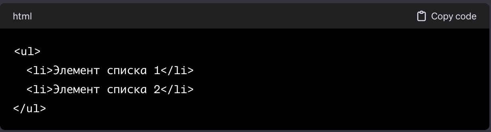

Раздел 2: Основные структурные элементы веб-страницы.
Знакомство с фронтенд-разработкой и её ролью
Веб-страницы являются визуальным и информационным интерфейсом между пользователями и интернет-содержимым. Они состоят из различных структурных элементов, которые определяют их общий макет и организацию. Рассмотрим основные структурные элементы веб-страницы:
1. HTML-документ: HTML (HyperText Markup Language) представляет собой основной язык разметки для веб-страниц. HTML-документ содержит структурированные элементы, определяющие содержание страницы, такие как заголовки, абзацы, списки, изображения и ссылки.

2. Заголовок страницы (Head): Внутри тега head содержатся метаданные страницы, такие как заголовок, мета-теги для SEO, ссылки на стили и скрипты. Заголовок страницы отображается в заголовке вкладки браузера.
3. Тело страницы (Body): Тело страницы, определенное внутри тега body, содержит основное содержимое страницы, такое как текст, изображения, ссылки, формы и другие элементы.
4. Заголовки (Headings): Заголовки, обозначаемые тегами h1 - h6, используются для выделения различных уровней заголовков на странице. h1 представляет самый высокий уровень, а h6 – самый низкий.

5. Параграфы (Paragraphs): Параграфы обозначаются тегом p и используются для структурирования текста на странице.

6. Ссылки (Links): Ссылки создаются с использованием тега и предоставляют возможность перехода на другие страницы, ресурсы или места внутри страницы.

7. Изображения (Images): Изображения вставляются с использованием тега и атрибута src, указывающего путь к файлу изображения.

8. Списки (Lists): Списки могут быть упорядоченными (ol) или неупорядоченными (ul), содержащими элементы списка (li).

9. Таблицы (Tables): Таблицы создаются с использованием тега table, а строки и ячейки таблицы определяются тегами tr и td соответственно.

Эти структурные элементы обеспечивают основу для создания информативных и визуально привлекательных веб-страниц. Правильное использование и комбинация этих элементов содействует созданию удобных и эффективных веб-приложений.